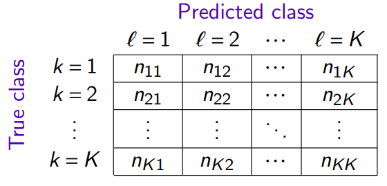
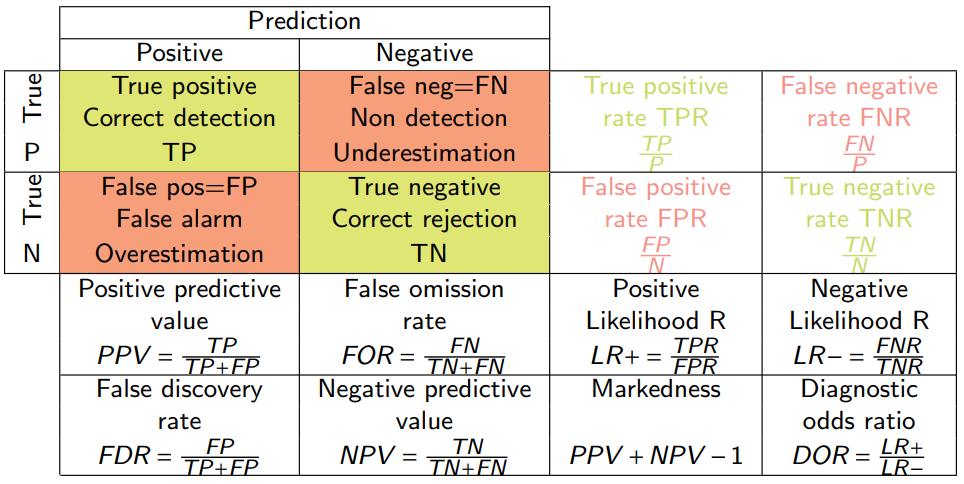
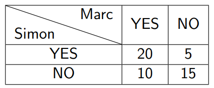

1 Predictive performance
1.1 Confusion matrix
The confusion matrix counts the occurrences of predictions according to the true values.

where \(n_{kℓ}\) is the number of observations of class \(k\) predicted in the class \(ℓ\)
1.2 Empirical risk
The empirical risk (average cost of misclassification) of the g classification rule is
\[ R(g) = \frac{1}{n} \sum_{k=1}^{K}\sum_{l=1}^{K} C_{kl}n_{kl} \] Where
\[ C_{kl} = \begin{cases} 1 & k = l \\ 0 & k \neq l \end{cases} \]
In the case of a 0-1 cost, we find the empirical error rate
\[ R(g) = \frac{1}{n} \sum_{k=1}^{K}\sum_{l=1 \: l\neq k}^{K} n_{kl} \]
1.3 Predictive performances in binary classification
1.3.1 Precision/Recall/Specificity

Confusion matrix in binary classification
True positive rate (TPR) is also called sensitivity, recall.
The false positive rate (FPR) corresponds to 1 - specificity.
The postive predictive value (PPV) is also called precision.
1.3.2 F1- Score
In binary classification, the F1-score depends on:
The positive predictive value (PPV), also called precision.
The true positive rate (TPR), also called sensitivity, recall.
\[ F_{1} = \frac{2PPV \times TPR}{PPV + TPR} = \frac{2TP}{2TP + FP + FN} \]
\[\begin{align} F_{1} &= \frac{2PPV \times TPR}{PPV + TPR} \\ &= \frac{2 \frac{TP}{TP+FP}\times\frac{TP}{TP+FN}}{\frac{TP}{TP+FP} + \frac{TP}{TP+FN}} \\ Numerator &= 2 \frac{TP^2}{(TP+FP)(TP+Fn)} \\ Denominator &= \frac{TP(TP+FN)+TP(TP+FP)}{(TP+FP)(TP+FN)} = \frac{TP(2TP+FN+FP)}{(TP+FP)(TP+FN)} \\ F_{1} &= \frac{2TP^{2}}{(TP+FP)(TP+FN)} \cdot \frac{(TP+FP)(TP+FN)}{TP(2TP+FN+FP)}\\ &= \frac{2TP^{2}}{TP(2TP+FN+FP)}\\ &= \frac{2TP}{2TP+FN+FP} \end{align}\]
It measures the classification rule’s ability to correctly predict class 1 entries and not predict 1 of the class 2 entries.
In the case where the predictions are no longer binary (multi-class), the F-measure is calculated by making the average of F1 scores for each class.
1.3.3 Kappa de Cohen
In statistics, the kappa method (kappa) measures agreement between observers during qualitative coding into categories.
\[ \kappa = \frac{Pr(a) - Pr(e)}{1 - Pr(e)} \]
Where:
\(Pr(a)\) is the proportion of agreement between coders
\(Pr(e)\) is the proportion of a random agreement

Marc and Simon are responsible for defining who will be accepted or not at the final exam in a group of 50 students. Each of them checks the copy of each student and notes received or not (YES or NO)
\[ P_{a} = \frac {a+d}{a+b+c+d} = \frac{20+15}{50} \]
To calculate the probability of agreement “at random”, we note :
Simon scored YES to 25 students, or 50% of the cases.
Marc scored YES in 60%, 30 out of 50 students.
\[ P_{YES} = \frac{a+b}{a+b+c+d} \times \frac{a+c}{a+b+c+d} = 0.5 \times 0.6 = 0.3 \]
\[ P_{NO} = \frac{c+d}{a+b+c+d} \times \frac{b+d}{a+b+c+d} = 0.5 \times 0.4 = 0.2 \]
The global probability that the teachers agree is:
\[ P_{e} = P_{YES} + P_{NO} = 0.3 + 0.2 = 0.5 \]
Kappa’s formula then gives :
\[ \kappa = \frac{Pr(a) - Pr(e)}{1 - Pr(e)} = \frac{0.7 - 0.5}{1 - 0.5} = 0.4 \]
1.3.4 ROC curve
The ROC curve is a graphical representation used to evaluate the performance of a binary classification model. It illustrates the trade-off between sensitivity (TPR) and specificity (1 - FPR) on different threshold parameters.
The shape of the ROC curve gives an overview of the efficiency of a classification model. A curve that slopes towards the upper left corner indicates a model with high sensitivity and specificity, while a curve closer to the diagonal line suggests a model with low discriminative power.
The area under the ROC curve (AUC) is an essential measure of model performance. It is calculated by integrating the area under the ROC curve, providing a single scalar value that summarizes the model’s ability to distinguish between classes. An AUC:
of 0.5 suggests absence of discriminating ability
from 0.7 to 0.8 is considered as acceptable
greater than 0.8 indicates good performance
greater than 0.9 suggests excellent performance
of 1 indicates perfect classification
A good model is both:
sensitive and specificity. This is measured with the ROC curve and the AUC.
sensible and accurate. This is measured with the F1-measure.